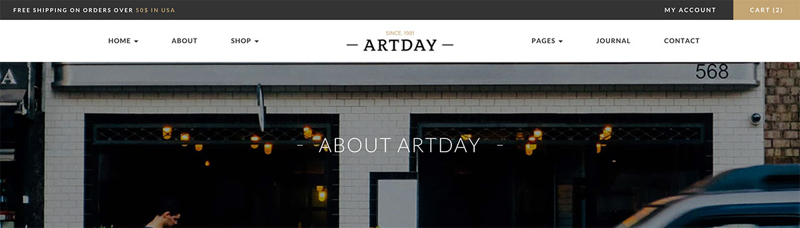
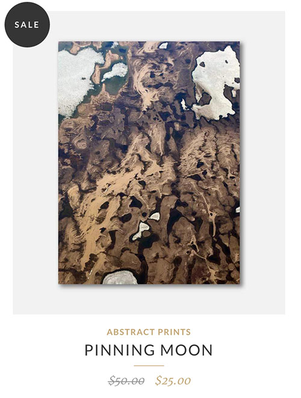

Documentation
Copyright Woss Themes 2015
This template includes following pages:
Stylesheets (CSS) of this template are placed in assets/css/ folder.
All Images are in assets/img/ folder.
And all Javascripts files are in assets/js/ folder.
Our template is based on Bootstrap 3 Framework the most popular framework for developing responsive, mobile first projects.
Bootstrap includes a responsive, mobile first fluid grid system that appropriately scales up to 12 columns as the device or viewport size increases. It includes predefined classes for easy layout options, as well as powerful mixins for generating more semantic layouts.
Create a .container (fixed-width) or .container-fluid (full-width) for proper alignment and padding, then create .row and add columns with appropriate device name (xs, sm, md, lg) and grid number (2, 4, 6, 12).
For full documentation, please visit Bootstrap 3 site: http://getbootstrap.com/css/
<div class="container">
<div class="row">
<div class="col-lg-12">
...
</div>
</div>
</div>
Well organized and labeled CSS files is one of our priorities.
These are the CSS file you're be using in the template:
jQuery - is a Javascript library that greatly reduces the amount of code that you must write.
For more information, please visit http://www.jquery.com/
The initialization of the elements, libs and features is made by the file main.js, in the js folder.
Take a look at the "build" function to see what it does.
Most of our pages have a header section with background image that have a parallax effect.
For this feature we use Simple Parallax Jquery Plugin, see bellow how you can change your image and title in your page.
<div class="ws-parallax-header parallax-window" data-parallax="scroll" data-image-src="assets/img/backgrounds/about-header-bg.jpg">
<div class="ws-overlay">
<div class="ws-parallax-caption">
<div class="ws-parallax-holder">
<h1>About Artday</h1>
</div>
</div>
</div>
</div>
In the first <div> att the end you can see the image path assets/img/backgrounds/about-header-bg.jpg here you can change your image.
In the third <div> you will see the <h1> title that you can change.

Here you will find how you can change your shop items image, title, price and category
<div class="col-sm-6 col-md-4 ws-works-item" data-sr='wait 0.1s, ease-in 20px'>
<a href="#">
<div class="ws-item-offer">
<figure>
<img src="assets/img/works/abstract/1.jpg" alt="Alternative Text" class="img-responsive">
</figure>>
</div>
<div class="ws-works-caption text-center">
Category, Title and Price here
</div>
</a>
</div>

Font Awesome are @font-face icon sets that you can change color and size using CSS.
If you need more information about these icon sets, please visit this sites:
http://fortawesome.github.io/Font-Awesome/
Font Awesome Icons
<i class="fa fa-heart"><i>
In our Template we use two different sliders, the header slider that is changing the images is Revolution Slider and the second slider for products is Owl Carousel.
Some information about changhing the image in Header.
For more information you can open the Revolution Slider Documentation located in the Plugins Folder.
In index.html line 224 you will find the path of the image.
<li>
<img src="assets/img/backgrounds/hero-bg.jpg" alt="Alternative Text">
</li>
And for Owl Carousel, if you want to change or add another product.
In index.html line 365 you will find the path of the image and everything you need.
<figure>
<img src="assets/img/works/abstract/5.jpg" alt="Alternative Text" class="img-responsive">
</figure>
Fonts:
Google Web Fonts - http://www.google.com/webfonts
Font Awesome Icons - http://fortawesome.github.com/Font-Awesome/
Scripts & Plugins:
jQuery - http://www.jquery.com/
Bootstrap Framework - http://getbootstrap.com/
Revolution Slider - http://revolution.themepunch.com/jquery
Owl Carousel - http://owlgraphic.com/owlcarousel/
Simple Parallax Scrolling - http://pixelcog.github.io/parallax.js/
Modernizr - http://modernizr.com/
Scroll Reveal - http://scrollrevealjs.org/
Animate CSS - https://daneden.github.io/animate.css/
Images:
Super Famouse Images: http://images.superfamous.com/
Flickr Free Images: https://www.flickr.com/
Unsplash: https://unsplash.com/
Design Inspiration: http://designspiration.net/